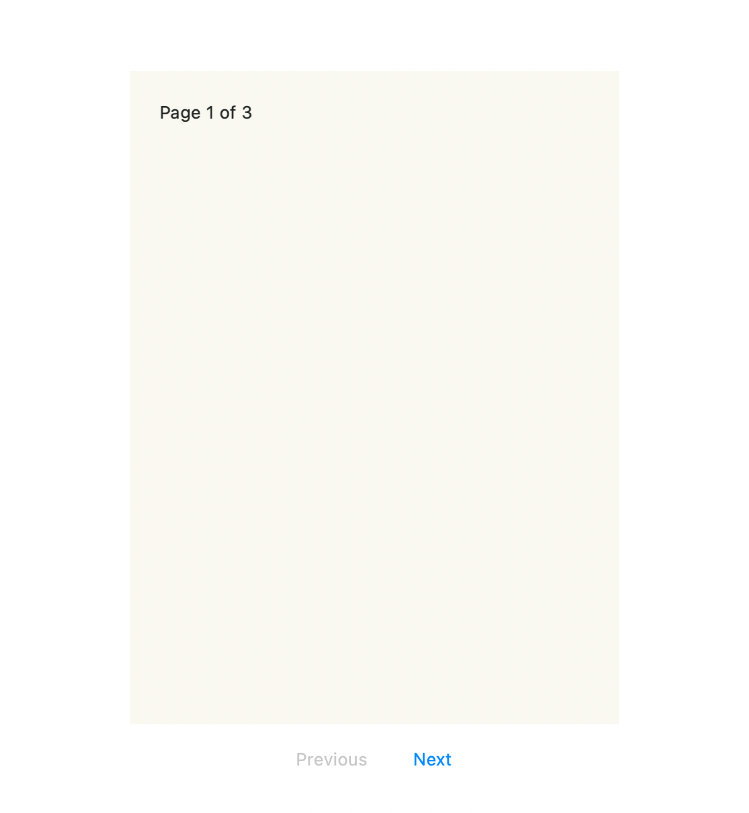

Quick start
You need a .NET 10 MAUI application and the workload for your target platform.
The repository pins the SDK and workload set in global.json.
The complete example below renders this live page on Mac Catalyst. It starts on page 1 of 3, with Previous disabled and Next enabled:

Reference the library
The source repository currently requires access. From your application's directory, add a reference to your local checkout:
dotnet add ReaderApp.csproj reference ../PageCurl/src/PageCurl.Maui/PageCurl.Maui.csproj
Replace the project names and relative path with yours. The MAUI project references Core, so your application needs only the MAUI reference. You can also consume locally packed packages; NuGet.org consumption remains unverified.
Register SkiaSharp
Add the handler registration in MauiProgram.cs:
using SkiaSharp.Views.Maui.Controls.Hosting;
var builder = MauiApp.CreateBuilder();
builder.UseMauiApp<App>().UseSkiaSharp();
Display a live page
Add the namespace, control and navigation buttons to MainPage.xaml. This
example uses an application namespace of ReaderApp:
<ContentPage
xmlns="http://schemas.microsoft.com/dotnet/2021/maui"
xmlns:x="http://schemas.microsoft.com/winfx/2009/xaml"
xmlns:curl="clr-namespace:PageCurl.Maui;assembly=PageCurl.Maui"
x:Class="ReaderApp.MainPage">
<Grid RowDefinitions="*,Auto,Auto" Padding="16" RowSpacing="12">
<curl:PageCurlView x:Name="Reader" PageAspectRatio="0.75" />
<HorizontalStackLayout Grid.Row="1" Spacing="12"
HorizontalOptions="Center">
<Button x:Name="PreviousButton" Text="Previous" />
<Button x:Name="NextButton" Text="Next" />
</HorizontalStackLayout>
<VerticalStackLayout x:Name="CaptureError" Grid.Row="2"
IsVisible="False" Spacing="6">
<Label Text="Page capture failed." HorizontalTextAlignment="Center" />
<Button x:Name="RetryButton" Text="Retry capture" />
</VerticalStackLayout>
</Grid>
</ContentPage>
The view stays interactive while flat. The control captures it after layout and uses that image during the turn. Give the control a nonzero layout size.
Connect navigation
Use PageNavigationState for the page index and first/last boundaries. In
MainPage.xaml.cs, update the content only after a committed completion:
using Microsoft.Maui.Controls;
using Microsoft.Maui.Graphics;
using PageCurl.Core;
namespace ReaderApp;
public partial class MainPage : ContentPage
{
private readonly PageNavigationState _navigation = new(pageCount: 3);
private Window? _observedWindow;
private bool _active;
public MainPage()
{
InitializeComponent();
Reader.PageTurnCompleted += (_, e) =>
{
if (_active && e.Committed && _navigation.TryCommit(e.Direction)) ShowPage();
};
PreviousButton.Clicked += (_, _) =>
{
if (_active && _navigation.CanTurnBackward) Reader.TryTurn(PageTurnDirection.Backward);
};
NextButton.Clicked += (_, _) =>
{
if (_active && _navigation.CanTurnForward) Reader.TryTurn(PageTurnDirection.Forward);
};
Reader.SnapshotFailed += (_, _) =>
{
if (_active) CaptureError.IsVisible = true;
};
RetryButton.Clicked += OnRetryClicked;
ShowPage();
}
private void ShowPage()
{
Reader.FrontContent = new Grid
{
BackgroundColor = Color.FromArgb("#FAF8F1"),
Padding = new Thickness(24),
Children =
{
new Label
{
Text = $"Page {_navigation.PageIndex + 1} of {_navigation.PageCount}",
TextColor = Color.FromArgb("#1C211F"),
},
},
};
CaptureError.IsVisible = false;
UpdateButtons();
}
private void UpdateButtons()
{
PreviousButton.IsEnabled = _active && _navigation.CanTurnBackward;
NextButton.IsEnabled = _active && _navigation.CanTurnForward;
}
protected override void OnAppearing()
{
base.OnAppearing();
ObserveWindow(Window);
SetActive(true);
}
protected override void OnDisappearing()
{
ObserveWindow(null);
SetActive(false);
base.OnDisappearing();
}
private void ObserveWindow(Window? window)
{
if (_observedWindow is not null)
{
_observedWindow.Stopped -= OnWindowStopped;
_observedWindow.Resumed -= OnWindowResumed;
}
_observedWindow = window;
if (window is not null)
{
window.Stopped += OnWindowStopped;
window.Resumed += OnWindowResumed;
}
}
private void OnWindowStopped(object? sender, EventArgs e) => SetActive(false);
private void OnWindowResumed(object? sender, EventArgs e) => SetActive(true);
private void SetActive(bool active)
{
_active = active;
if (!active) Reader.CancelInteraction();
Reader.IsVisible = active;
if (active) CaptureError.IsVisible = false;
UpdateButtons();
}
private async void OnRetryClicked(object? sender, EventArgs e)
{
if (!_active || !RetryButton.IsEnabled) return;
RetryButton.IsEnabled = false;
CaptureError.IsVisible = false;
try { await Reader.RefreshSnapshotAsync(); }
catch (OperationCanceledException) { }
finally { RetryButton.IsEnabled = true; }
}
}
Gestures and buttons reach the same completion handler. TryCommit keeps the
model in range, including a gesture at either endpoint. TryTurn returns
false when the control cannot start a command; leave the model unchanged.
Buttons reflect page boundaries; a current snapshot must also be available
before a turn starts. Automatic capture follows layout. SnapshotFailed shows
the retry control, and retry awaits capture without changing navigation.
The active flag prevents completion callbacks from changing an inactive page. Stopping or leaving the page cancels the turn before hiding the control; showing it again requests a fresh capture. Leaving also detaches window events.
This example replaces the live page after completion. To reveal destination
images beneath it during a turn, supply UnderPageImage for forward turns and
PreviousPageImage for backward turns. You own those SKImage values: keep
them alive while assigned, then cancel interaction and clear the image
properties before disposal. Use two-page spreads when the control
should capture live neighboring pages.
Read images and live content for backside and in-place refresh behavior, and runtime rules for UI-thread and lifecycle details.